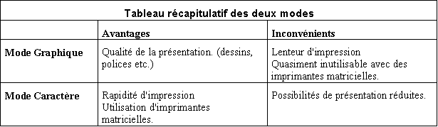

Harmony gère deux types de masques d'impression : les masques "graphiques" et les masques "caractères".
Les masques graphiques utilisent toutes les possibilités graphiques de Windows (polices, images, dessins, etc…). Ils sont essentiellement destinés à être imprimés sur des imprimantes laser ou à jet d'encre et seront utilisés lorsque la présentation est le critère le plus important (devis, factures).
Les masques caractères ne comportent pas d'objets graphiques et sont essentiellement destinés à être imprimés sur des imprimantes matricielles. Ils seront préférés pour éditer de gros volumes de données (listings).
